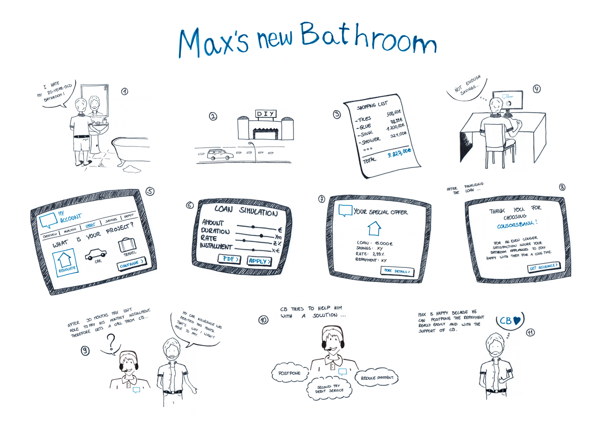

Storyboards
At the beginning of the project, storyboards for various personas were developed. The aim of the storyboards was to present the functions and possibilities of consumer credit and to illustrate them with a simple story.

One of these storyboards shows the story of Max, who wants to use the loan to finance a new bathroom. Using simple sketches, the first design possibilities for the later product are shown.